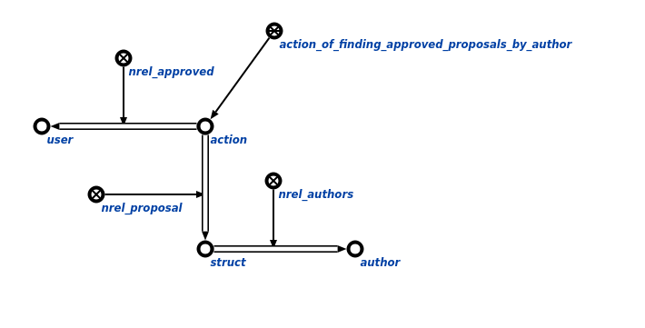

Команда пользовательского интерфейса для поиска всех утвержденных предложений разработчика с заданным контекстом предназначена для поиска утвержденныx предложений разработчикав рамках контекста, который ограничивает область поиска агента.Первым аргументом команды является пользователь, для которого необходимо найти все утвержденные предложения.Вторым агрументом является контекст в рамках которого осуществляется поиск Результатом выполнения команды является вывод на экран всех утвержденныx предложений разработчика в рамках контекста. Например:
